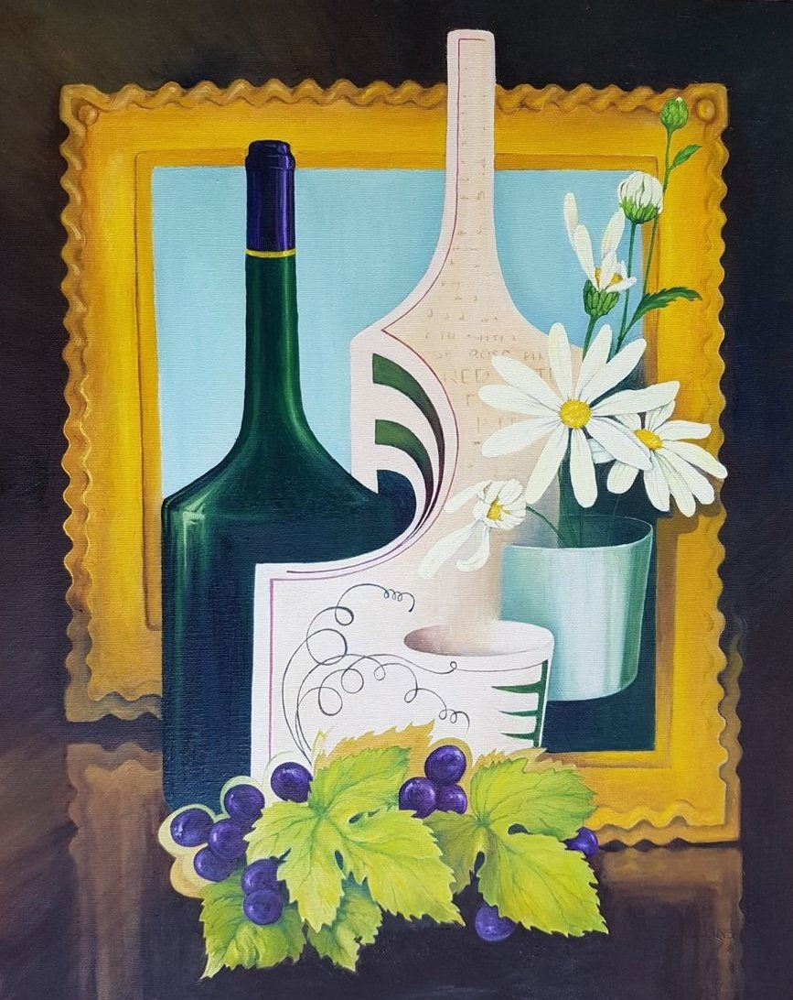

Stylised Still Life
No. 89- Medium
- Oil on canvas board
- Size
- 51 × 40 cm
- Year
- 2022
- Price
- £300
This started as a composition of bottles, which then became the interesting structure it is now.
Ask about this paintingOr email enquiries@joanmullinsart.co.uk, quoting No. 89. UK only. Collection from Nantwich is free; UK postage is quoted when you enquire.

 Three Shells
Three Shells Bottles and mugs
Bottles and mugs Pencil Study of Shells
Pencil Study of Shells